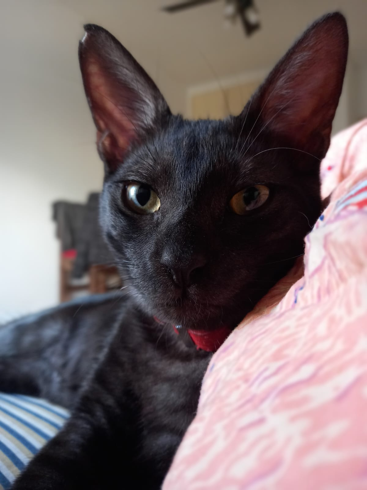

Ruth Estefanía Zabaleta

Edad: 25 años
Domicilio: Boedo 787
¿Qué series me gustan?
- Game of thrones
- Greys Anatomy
- Breaking bad
¿Qué pelis son las que más me gustaron?
- Los 7 pecados capitales
- Yo soy Sam
- La vida es bella
Perfil
Me gusta dibujar y hacer retratos, tengo como hobby pintar
Me gusta mucho cocinar, en especial distintos tipos de salsas
Me gustan las cosas saladas más que las dulces